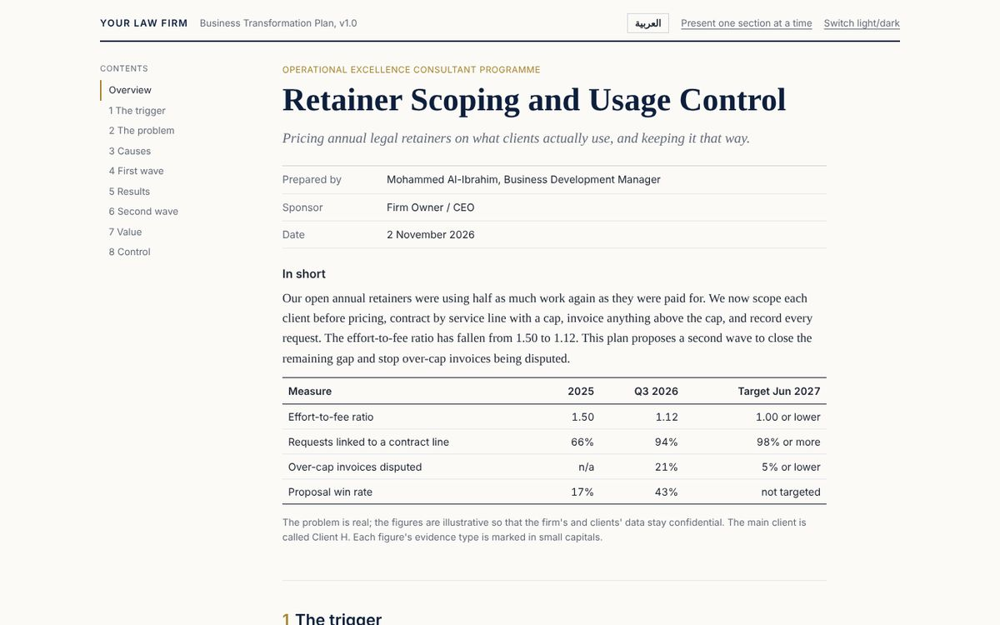

Retainer scoping and usage control
A plan for moving annual legal retainers from open-ended contracts to scoped ones priced on what clients actually use.

The problem
An open retainer is easy to sell, then the client uses several times what they paid for. The firm loses money, and the client is surprised when extra invoices come up.
How it works
- Compare each client's real usage with their fees, one service line at a time.
- Design retainer tiers with a cap per service, and bill clearly for anything above the cap.
- Roll it out in waves: new contracts first, then renewals.
Try it yourself
Browse the plan from the side menu and switch language at the top. The figures are illustrative.
Figures in this version are illustrative, and client names are replaced with letters.